記事一覧
これまでに公開したすべての記事。新しい順にご覧いただけます。
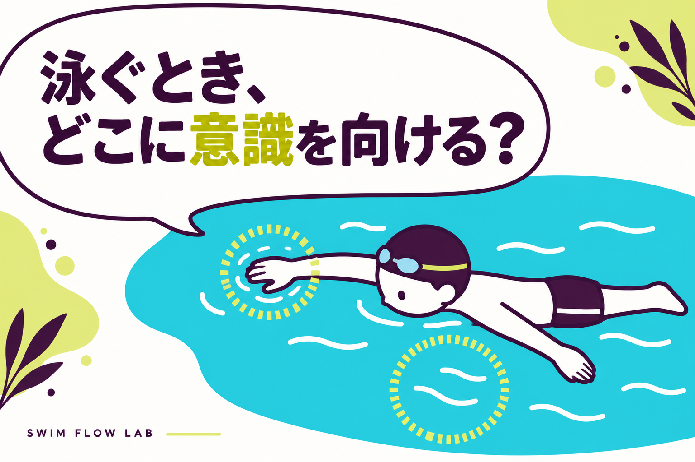
ARTICLE 14
泳ぐとき、どこに意識を向ける？
記事を読む ↗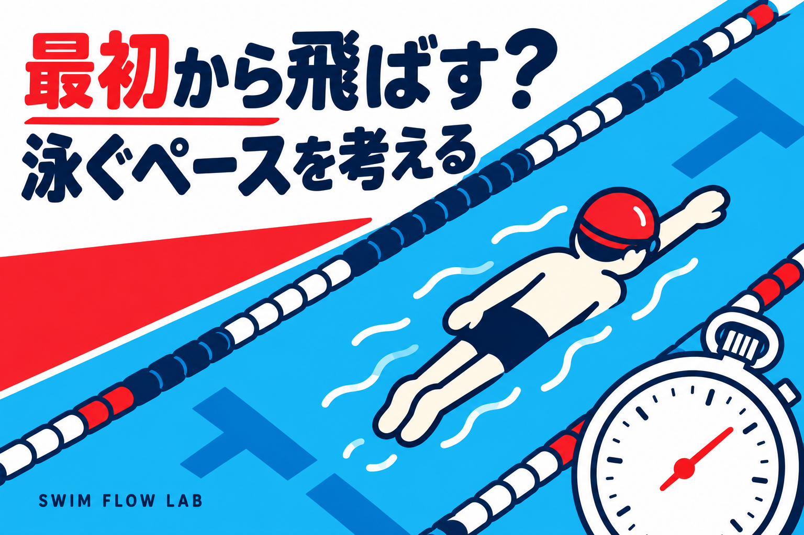
ARTICLE 13
最初から飛ばす？ 泳ぐペースを考える
記事を読む ↗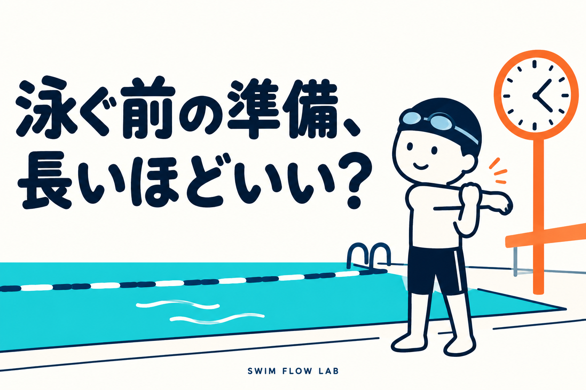
ARTICLE 12
泳ぐ前の準備、長いほどいい？
記事を読む ↗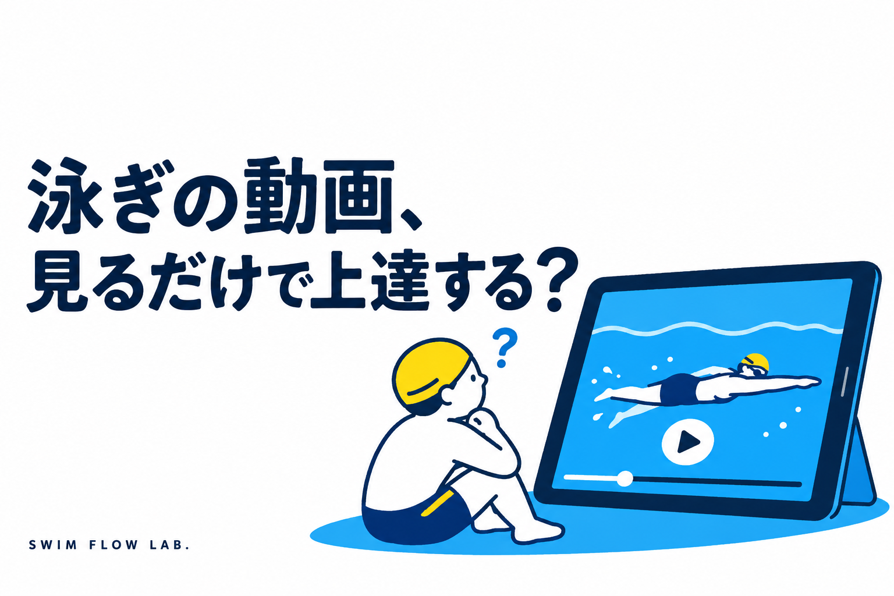
ARTICLE 11
泳ぎの動画、見るだけで上達する？
記事を読む ↗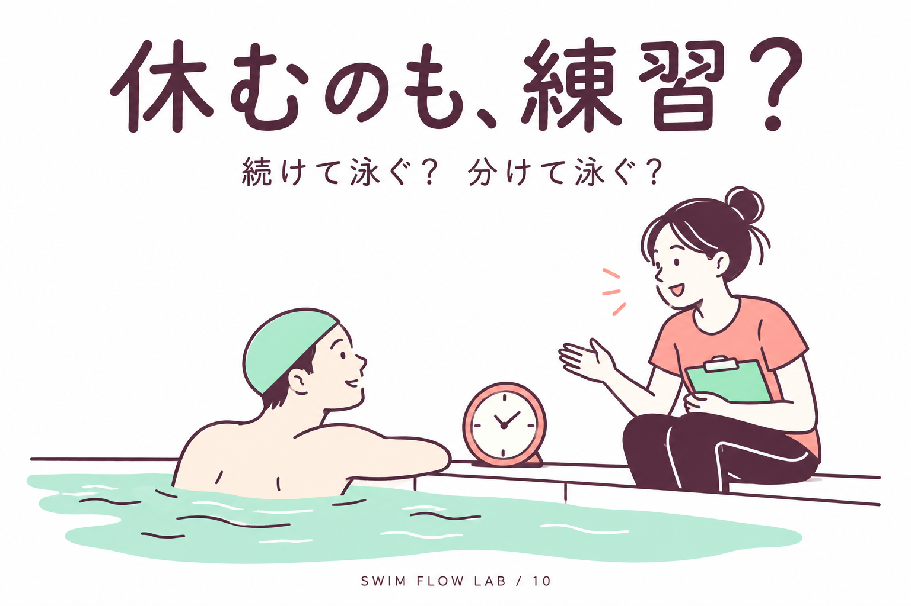
ARTICLE 10
泳ぐ練習、途中で休んでもいい？
記事を読む ↗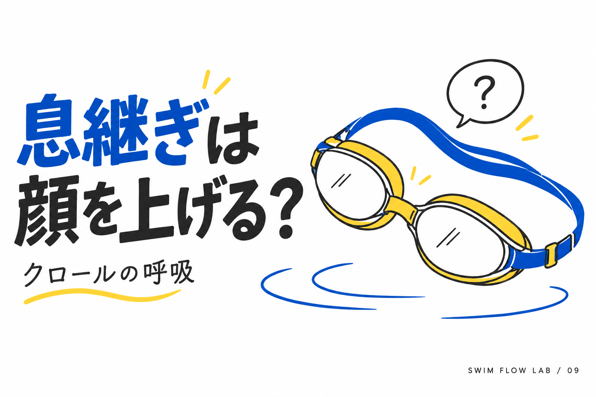
ARTICLE 09
クロールの息継ぎ、顔を上げずにどう吸う？
記事を読む ↗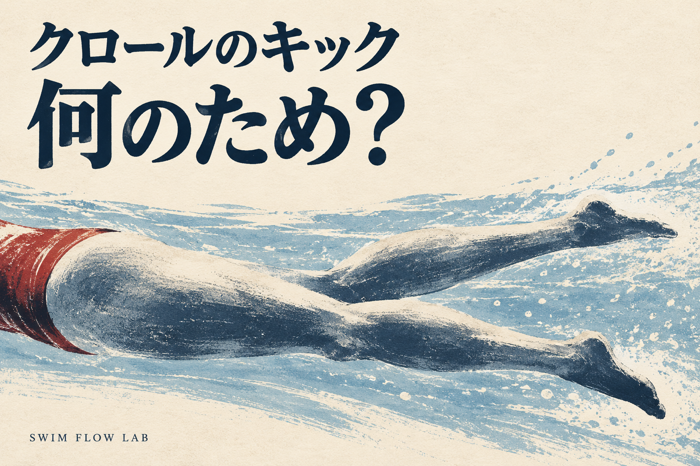
ARTICLE 08
クロールのキックは、何のため？
記事を読む ↗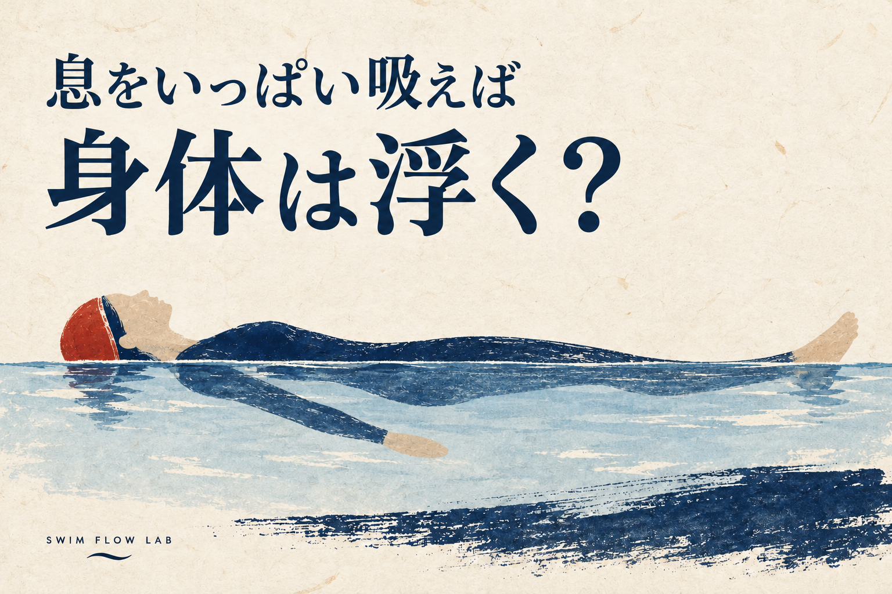
ARTICLE 07
息をいっぱい吸えば、身体は浮く？
記事を読む ↗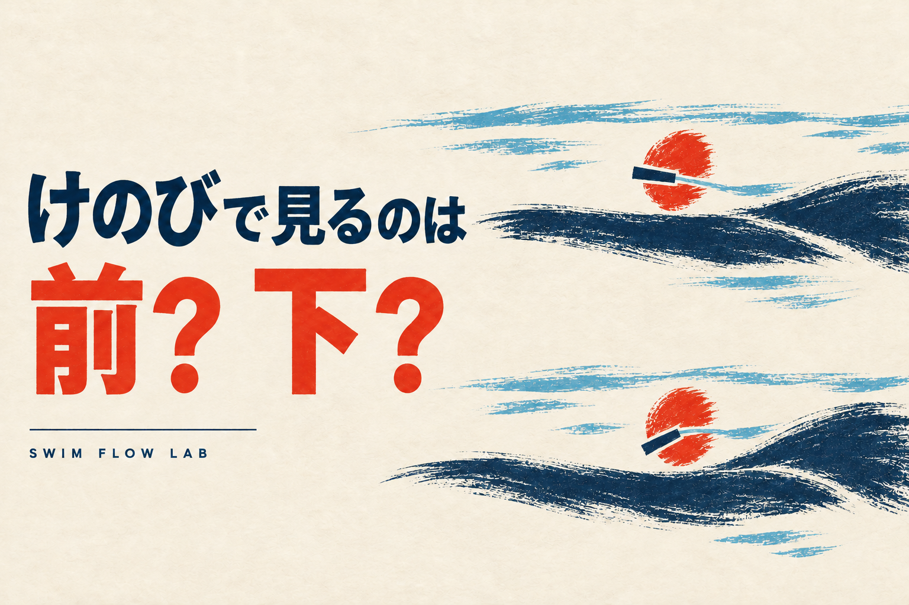
ARTICLE 06
けのびで見るのは前？ 下？
記事を読む ↗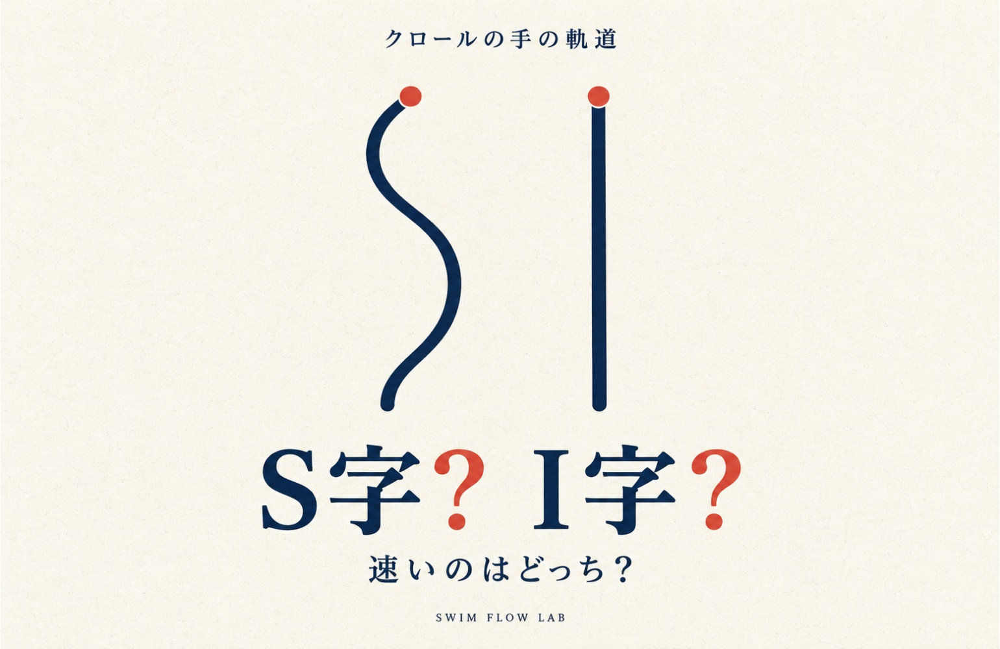
ARTICLE 05
クロールはS字よりI字でかくほうが速い？
記事を読む ↗
ARTICLE 04
ターンは壁をすぐ蹴ったほうが速い？
記事を読む ↗
ARTICLE 03
平泳ぎのひと掻きひと蹴り速さを残すには？
記事を読む ↗
ARTICLE 02
大きく泳ぐ？ 速く回す？
記事を読む ↗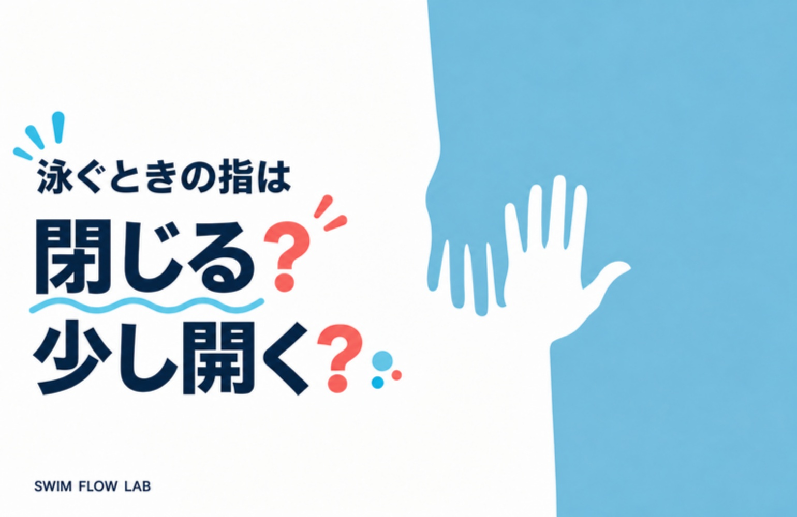
ARTICLE 01